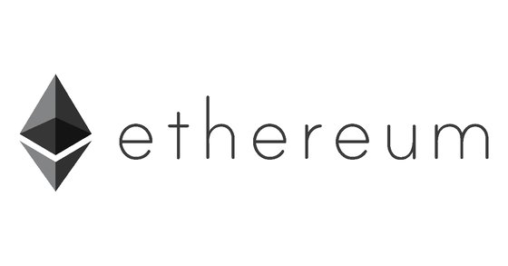

이더리움(Ethereum)은 블록체인 기술을 기반으로 스마트 계약 기능을 구현하기 위한 분산 컴퓨팅 플랫폼이자 플랫폼의 자체 통화명이다.
이더리움이 제공하는 이더(Ether)는 비트코인과 마찬가지로 암호화폐의 일종으로 거래되고 있다.
이더리움의 화폐 단위는 ETH로 표시한다. 비트코인 이후에 등장한 알트코인 중 시가 총액이 가장 높은 대표적인 알트코인이다.
Ethereum의 정확한 발음은 미국식으로는 이씨리엄([iˈθɪɹiəm])이고, 영국식으로는 이씨어리엄([iˈθɪəɹiəm])이다.
이더리움은 초기에 '이시리움' 또는 '에테리움'이라고 표기하기도 하였으나, 요즘에는 '이더리움'으로 표기하는 경우가 많다.
